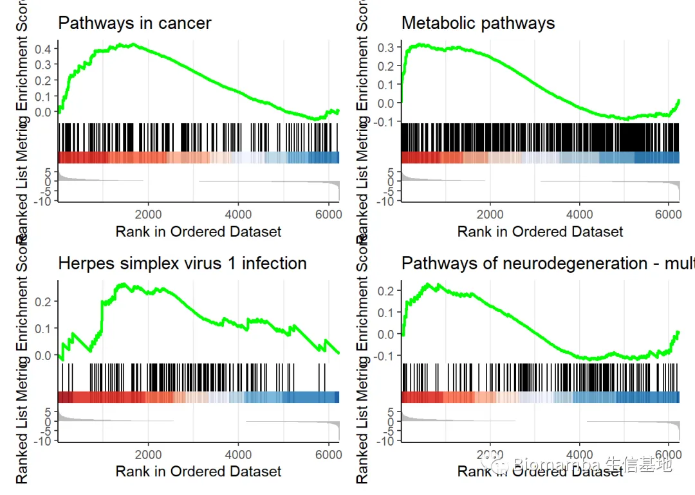

答读者问 （一）单基因究竟能否进行GSEA
原文：https://mp.weixin.qq.com/s?__biz=MzAwMzIzOTk5OQ==&mid=2247484175&idx=1&sn=3e45ad62b045a541874e5ae7ca03f849&chksm=9b3f7a5fac48f349f8893500825d2c6b4ff581fbb0816c1074d88a0dbbb4a612c1e1bb3740bb#rd 合集：答读者问
单基因怎么做GSEA
作者：Biomamba
2021/9/7
最近总有读者和朋友问我单基因能不能做GSEA，其实两句话可以把这个问题解释清楚
首先、GSEA全称Gene Set Enrichment Analysis，显然是针对一个基因集的富集分析
其次、GSEA的输入数据是一个差异列表，即差异基因集
答：不能，但不完全是不能，毕竟，办法都是人想出来的嘛
所以，正确的思路是：拥有大样本的前提下，通过单基因表达量的阈值将所有样本分为高表达和低表达两组，对这两组进行差异分析，得到的差异分析列表即为GSEA的输入数据，可用于下游分析 从数据挖掘的角度上来说，提到大样本，当然首先想到TCGA，那我们就找个数据来试一试吧。
测试数据下载链接：
链接：https://pan.baidu.com/s/1wWd5FKR6rk0wJ2WkXpZ03w
提取码：t6sb
rm(list=ls())
options(stringsAsFactors = F)
dir.create('myoutput')
## Warning in dir.create("myoutput"): 'myoutput'已存在
d='myoutput'
处理一下表达矩阵
kirc <- read.table(file.path(d,'expr.txt'),header = T,sep='\t',fill=T)#读取案例数据
dim(kirc)#看看这个矩阵有多大
## [1] 19376 1212
dim(na.omit(kirc))#去除包含NA的数据
## [1] 19376 1212
expr <- na.omit(kirc)
expr <- as.data.frame(expr[seq(1,nrow(expr),by=3),3:ncol(expr)])#缩小一下表达矩阵
rownames(expr)[10:20]
## [1] "A2M|2" "AAA1|404744" "AACS|65985" "AADACL4|343066"
## [5] "AAGAB|79719" "AANAT|15" "AARS|16" "AASS|10157"
## [9] "ABAT|18" "ABCA12|26154" "ABCA1|19"
mynewrowname <- apply(as.data.frame(rownames(expr)), 1, function(x){unlist(strsplit(x,"\\|",))[1]})
#刚得到的矩阵基因名后面有一串奇怪的字符，需要把基因名取出来
mynewrowname <- make.names(mynewrowname, unique = T)#进行行名唯一化
rownames(expr)<-mynewrowname
rownames(expr)[10:20]#基因名没问题，这样表达矩阵就准备好啦
## [1] "A2M" "AAA1" "AACS" "AADACL4" "AAGAB" "AANAT" "AARS"
## [8] "AASS" "ABAT" "ABCA12" "ABCA1"
#就比如说我们需要研究A2M这个基因吧
expr<-expr[,order(expr['A2M',],decreasing = T)]#先排一下序，方便后面做差异分析
## Warning in xtfrm.data.frame(x): cannot xtfrm data frames
expr[1:10,1:10]#顺序确实变了
## TCGA.BH.A0AV.01A.31R.A115.07 TCGA.AR.A0TP.01A.11R.A084.07
## X. 19.5870 30.3657
## X..1 1282.7401 703.1137
## X..2 0.0000 0.3621
## X..3 3.6938 2.8965
## X..4 5.7085 0.0000
## X..5 30.2518 18.1028
## X..6 0.0000 0.3621
## X..7 2.6864 2.8965
## A2BP1 0.0000 0.0000
## A2M 247448.2001 234183.5047
## TCGA.D8.A1XJ.01A.11R.A14M.07 TCGA.EW.A1OW.01A.21R.A144.07
## X. 6.3713 7.0834
## X..1 1190.3126 716.9766
## X..2 0.0000 0.0000
## X..3 8.7567 1.9196
## X..4 1.5098 3.8392
## X..5 55.6445 52.3671
## X..6 0.0000 0.0000
## X..7 12.9841 6.7187
## A2BP1 0.6039 0.0000
## A2M 175697.4758 166330.3467
## TCGA.C8.A1HJ.01A.11R.A13Q.07 TCGA.AR.A24Q.01A.12R.A169.07
## X. 22.7136 9.4731
## X..1 1791.3165 1039.8836
## X..2 0.0000 0.0000
## X..3 2.8011 4.0757
## X..4 0.0000 0.2911
## X..5 50.5742 0.0000
## X..6 1.0504 0.2911
## X..7 18.9076 2.9112
## A2BP1 0.0000 0.0000
## A2M 135309.3662 118928.8151
## TCGA.B6.A400.01A.11R.A239.07 TCGA.A2.A0D0.01A.11R.A00Z.07
## X. 18.9138 2.5659
## X..1 943.0537 1345.5519
## X..2 0.0000 0.0000
## X..3 4.0990 1.6474
## X..4 0.0000 0.0000
## X..5 2.2398 0.0000
## X..6 0.0000 0.0000
## X..7 9.6618 11.5321
## A2BP1 0.0000 0.0000
## A2M 117803.4402 112471.0008
## TCGA.BH.A202.01A.11R.A14M.07 TCGA.B6.A0WY.01A.11R.A109.07
## X. 11.8206 4.6159
## X..1 779.8674 947.1831
## X..2 0.0000 0.0000
## X..3 6.5206 2.2407
## X..4 1.3041 0.3201
## X..5 10.4121 0.0000
## X..6 0.2608 0.0000
## X..7 19.0402 27.8489
## A2BP1 1.3041 2.2407
## A2M 103158.9299 97100.0864
循环用秩和检验得到差异列表
s1<-colnames(expr)[1:500] # 属于类型1
s2<-colnames(expr)[711:1210]# 属于类型2 最终FC值为类型1/类型2
#如此便是按A2M的表达量计算表达量最高的500个样本与最低的500个样本间的差异基因
pvalue = padj = log2FoldChange = matrix(0, nrow(expr), 1)
for(i in 1:nrow(expr)){
pvalue[i, 1] = p.value = wilcox.test(as.numeric(expr[i, s1]), as.numeric(expr[i, s2]))$p.value
log2FoldChange[i, 1] = log2(mean(as.numeric(expr[i, s1]))/mean(as.numeric(expr[i, s2])))
}
padj = p.adjust(as.vector(pvalue), "fdr", n = length(pvalue))
rTable = data.frame(log2FoldChange, pvalue, padj, row.names = rownames(expr))
treatment_Log2TPM <- signif(apply(expr[rownames(rTable), s1], 1, mean), 4)
control_Log2TPM <- signif(apply(expr[rownames(rTable), s2], 1, mean), 4)
DGE <- rep("NC", nrow(expr))
DGE[((rTable$pvalue) < 0.05) & (rTable$log2FoldChange > 0)] = "UP"
DGE[((rTable$pvalue) < 0.05) & (rTable$log2FoldChange < 0)] = "DN"
gene = rownames(expr)
rTable = data.frame(treatment_Log2TPM, control_Log2TPM, rTable[, c("log2FoldChange", "pvalue", "padj")], DGE)
rTable[1:20,1:6]#康康得到的差异列表
## treatment_Log2TPM control_Log2TPM log2FoldChange pvalue
## X. 7.925e+00 9.251e+00 -2.231879e-01 7.944475e-02
## X..1 9.537e+02 1.162e+03 -2.852114e-01 1.004904e-19
## X..2 1.366e-01 1.171e-01 2.229602e-01 7.465046e-02
## X..3 6.123e+00 6.123e+00 9.372584e-05 8.226596e-01
## X..4 2.223e+00 3.591e+00 -6.919638e-01 2.599897e-01
## X..5 2.794e+01 1.852e+01 5.926891e-01 1.505348e-05
## X..6 6.360e-01 4.528e-01 4.900466e-01 1.117739e-04
## X..7 3.592e+01 5.911e+01 -7.188454e-01 6.138161e-05
## A2BP1 6.677e+00 2.293e+00 1.542216e+00 2.070982e-04
## A2M 2.808e+04 6.813e+03 2.043336e+00 5.856243e-165
## AAA1 6.478e-02 6.555e-02 -1.711455e-02 2.333954e-01
## AACS 1.152e+03 1.224e+03 -8.692829e-02 6.337323e-06
## AADACL4 9.600e-02 2.400e-02 1.999772e+00 1.531960e-07
## AAGAB 1.393e+03 1.825e+03 -3.893436e-01 1.233786e-26
## AANAT 4.271e-01 5.413e-01 -3.418291e-01 9.894361e-01
## AARS 2.990e+03 3.512e+03 -2.320664e-01 8.710725e-06
## AASS 3.672e+02 1.673e+02 1.133928e+00 6.082615e-47
## ABAT 1.111e+03 1.581e+03 -5.096753e-01 1.153927e-02
## ABCA12 3.961e+02 6.406e+02 -6.934827e-01 3.780739e-03
## ABCA1 1.274e+03 7.247e+02 8.144253e-01 9.311181e-34
## padj DGE
## X. 9.843346e-02 NC
## X..1 4.201082e-19 DN
## X..2 9.286736e-02 NC
## X..3 8.455694e-01 NC
## X..4 2.979548e-01 NC
## X..5 2.671900e-05 UP
## X..6 1.846414e-04 UP
## X..7 1.033804e-04 DN
## A2BP1 3.334116e-04 UP
## A2M 3.782547e-161 UP
## AAA1 2.692928e-01 NC
## AACS 1.158584e-05 DN
## AADACL4 3.167391e-07 UP
## AAGAB 7.102519e-26 DN
## AANAT 9.902026e-01 NC
## AARS 1.577750e-05 DN
## AASS 8.503811e-46 UP
## ABAT 1.576733e-02 DN
## ABCA12 5.430241e-03 DN
## ABCA1 7.574423e-33 UP
做一下准备工作先
#既然得到差异列表，GSEA也就可以开始了
if(!require(clusterProfiler))install.packages("clusterProfiler")
if(!require(msigdbr)) install.packages("msigdbr")
msigdbr_species() #康康有哪些物种可以拿来做GSEA
## # A tibble: 20 x 2
## species_name species_common_name
## <chr> <chr>
## 1 Anolis carolinensis Carolina anole, green anole
## 2 Bos taurus bovine, cattle, cow, dairy cow, domestic cat~
## 3 Caenorhabditis elegans roundworm
## 4 Canis lupus familiaris dog, dogs
## 5 Danio rerio leopard danio, zebra danio, zebra fish, zebr~
## 6 Drosophila melanogaster fruit fly
## 7 Equus caballus domestic horse, equine, horse
## 8 Felis catus cat, cats, domestic cat
## 9 Gallus gallus bantam, chicken, chickens, Gallus domesticus
## 10 Homo sapiens human
## 11 Macaca mulatta rhesus macaque, rhesus macaques, Rhesus monk~
## 12 Monodelphis domestica gray short-tailed opossum
## 13 Mus musculus house mouse, mouse
## 14 Ornithorhynchus anatinus duck-billed platypus, duckbill platypus, pla~
## 15 Pan troglodytes chimpanzee
## 16 Rattus norvegicus brown rat, Norway rat, rat, rats
## 17 Saccharomyces cerevisiae baker's yeast, brewer's yeast, S. cerevisiae
## 18 Schizosaccharomyces pombe 972h- <NA>
## 19 Sus scrofa pig, pigs, swine, wild boar
## 20 Xenopus tropicalis tropical clawed frog, western clawed frog
if(!require(org.Hs.eg.db)) BiocManager::install("org.Hs.eg.db")#下载人的基因注释
## 载入需要的程辑包：org.Hs.eg.db
if(!require(enrichplot))install.packages("enrichplot")
## 载入需要的程辑包：enrichplot
if(!require(ggplot2)) install.packages("ggplot2")
## 载入需要的程辑包：ggplot2
正式开始做GSEA
lalala <- rTable
lalala$SYMBOL <- rownames(lalala)
geneList <- lalala$SYMBOL[order(lalala$log2FoldChange)]#GSEA的输入数据实际上就是基因按照一定标准排序的向量，这里我们选foldchange进行排序
gene.df <- bitr(geneList,fromType="SYMBOL",toType=c("ENTREZID","ENSEMBL"),
OrgDb = org.Hs.eg.db)#超好用的SYMBOL转ENTREZID函数，突出一个智能
## 'select()' returned 1:many mapping between keys and columns
## Warning in bitr(geneList, fromType = "SYMBOL", toType = c("ENTREZID",
## "ENSEMBL"), : 15.13% of input gene IDs are fail to map...
head(gene.df)#体验一下智能
## SYMBOL ENTREZID ENSEMBL
## 1 UCN3 114131 ENSG00000178473
## 5 CHRNA9 55584 ENSG00000174343
## 6 FLG2 388698 ENSG00000143520
## 7 LCE1C 353133 ENSG00000197084
## 8 TEX101 83639 ENSG00000131126
## 9 SLC18A3 6572 ENSG00000187714
data4gsea <- lalala[gene.df$SYMBOL,]$log2FoldChange
names(data4gsea)<-gene.df$ENTREZID
kk2 <- gseKEGG(geneList=data4gsea[order(data4gsea,decreasing = T)],#ENTREZID需要作为GSEA的输入数据
organism = "hsa",#hsa => human , mmu => mouse #可用物种列表：https://www.genome.jp/kegg/catalog/org_list.html
nPerm=1000,
minGSSize = 120,
pvalueCutoff = 1,
verbose = FALSE)
## Reading KEGG annotation online:
## Reading KEGG annotation online:
#画几个通路试一试
p1 <- gseaplot2(kk2,geneSetID = 1,title = kk2$Description[1])
p2 <- gseaplot2(kk2,geneSetID = 2,title = kk2$Description[2])
p3 <- gseaplot2(kk2,geneSetID = 3,title = kk2$Description[3])
p4 <- gseaplot2(kk2,geneSetID = 4,title = kk2$Description[4])
library(patchwork)
p1+p2+
p3+p4

#kk2计算了当前背景下所有基因集，你也可以通过下面循环把所有的结果都画出来
# for (i in 1:length(kk2$Description)) {
# plot1 <- gseaplot2(kk2,geneSetID = i,title = kk2$Description[i])
# ggsave( paste0(kk2$Description[i],".pdf"),plot = plot1,height = 10,width = 10)
# }